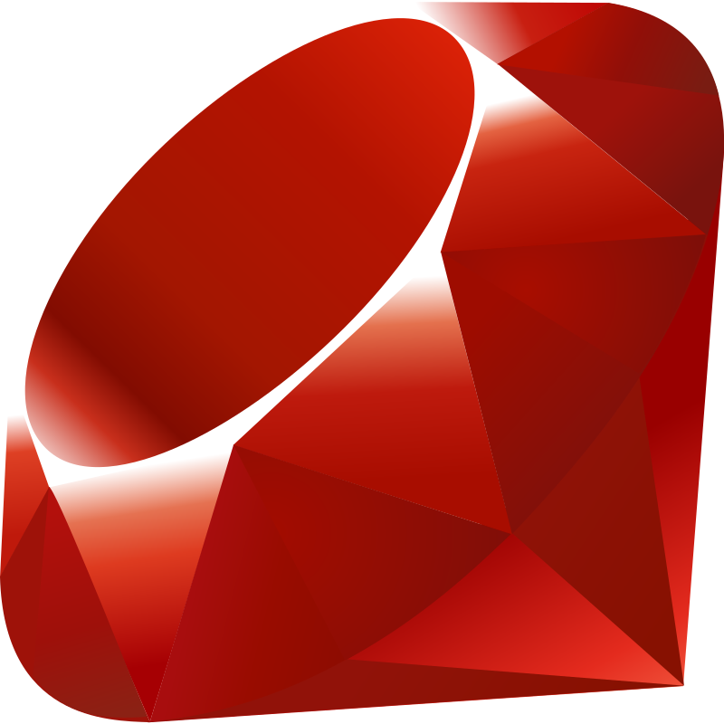

Lenguaje Ruby.
Descripción.
Ruby
es un lenguaje de programación versátil y de alto nivel que se destaca por su enfoque en la legibilidad y la elegancia del código. Diseñado por Yukihiro "Matz" Matsumoto en la década de 1990,
Ruby
se inspiró en varios lenguajes, como Perl, Smalltalk y Lisp, y buscaba combinar la facilidad de uso con una sintaxis natural y amigable para los programadores.
La simplicidad y la flexibilidad son aspectos distintivos de
Ruby
. Proporciona una variedad de estructuras de control y tipos de datos, lo que permite a los programadores elegir el enfoque que mejor se adapte a sus necesidades y preferencias.
Ruby
también es conocido por su enfoque en la orientación a objetos, ya que todo en
Ruby
es un objeto, incluso los números y las cadenas.
La comunidad de
Ruby
es activa y apasionada, lo que ha llevado al desarrollo de numerosas bibliotecas y marcos de trabajo que amplían las capacidades de
Ruby
para aplicaciones web, desarrollo de juegos, automatización y más. En general,
Ruby
se destaca como un lenguaje de programación que prioriza la expresividad, la creatividad y la productividad.
Características.
Sintaxis Elegante:
Ruby
se enorgullece de su sintaxis legible y natural, que se asemeja al lenguaje humano y facilita la escritura y lectura de código.
Orientación a Objetos: Todo en
Ruby
es un objeto, incluso los tipos primitivos como números y cadenas. Esto promueve una programación orientada a objetos consistente y cohesiva.
Metaprogramación:
Ruby
ofrece un potente sistema de metaprogramación que permite a los desarrolladores modificar y extender el comportamiento de clases y objetos en tiempo de ejecución.
Bloques y Cierres:
Ruby
soporta bloques de código y cierres, lo que permite una programación funcional y la creación de expresiones más concisas y legibles.
Dinamismo:
Ruby
es un lenguaje dinámico que permite modificar estructuras de datos y clases en tiempo de ejecución, lo que facilita la adaptación y el cambio flexible de programas.
Colecciones Flexibles:
Ruby
proporciona colecciones versátiles como arrays y hashes, junto con una amplia gama de métodos incorporados para el manejo eficiente de datos.
RubyGems y Ruby on Rails: RubyGems es un sistema de gestión de paquetes que simplifica la instalación y distribución de bibliotecas. Ruby on Rails es un popular marco de desarrollo web construido en
Ruby
que impulsa la creación rápida de aplicaciones robustas.
Usos.
Desarrollo Web:
Ruby
es ampliamente conocido por ser el lenguaje de programación detrás del popular marco de desarrollo web Ruby on Rails. Rails ha sido utilizado para construir numerosos sitios web y aplicaciones web, gracias a su enfoque en la productividad, la convención sobre la configuración y la arquitectura MVC (Modelo-Vista-Controlador).
Automatización: Gracias a su sintaxis legible y su enfoque en la productividad,
Ruby
se utiliza para escribir scripts y herramientas de automatización de tareas. Esto puede incluir la automatización de tareas administrativas, procesamiento de datos y más.
Desarrollo de Juegos:
Ruby
es utilizado para el desarrollo de juegos, especialmente en la creación de prototipos y juegos indie. Frameworks como Gosu y Rubygame proporcionan herramientas para crear juegos en
Ruby
.
Aplicaciones de Escritorio:
Ruby
también se puede utilizar para crear aplicaciones de escritorio mediante el uso de bibliotecas como Shoes y FXRuby, que permiten desarrollar interfaces gráficas de usuario (GUI).
Análisis de Datos y Ciencia:
Ruby
se usa para el procesamiento y análisis de datos, especialmente cuando se necesita manipular información de manera flexible. Se pueden utilizar bibliotecas como NArray y daru para realizar análisis de datos y cálculos científicos.
Educación: Debido a su sintaxis legible y su enfoque en los conceptos de programación,
Ruby
se utiliza en entornos educativos para enseñar programación a principiantes. El lenguaje es conocido por ser amigable y acogedor para quienes se están introduciendo en la programación.
Automatización de Pruebas (Testing):
Ruby
es ampliamente utilizado en el campo de la automatización de pruebas de software. Las herramientas como RSpec y Cucumber permiten a los desarrolladores escribir pruebas automatizadas para verificar la funcionalidad de sus aplicaciones.
